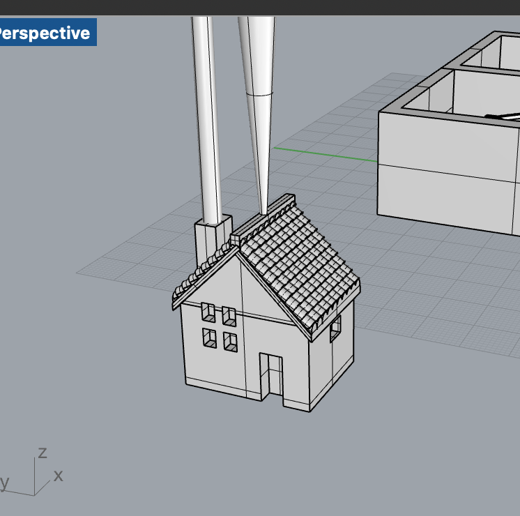

I initially had a difficult time conceptualizing how to design a mold for a mold in CAD. I ended up creating my design in a very incremental fashion to help me understand each piecee. I think this approach will also help me if I need to make appropriate adjustments to the mold without completely starting over.
I began by designing a mini house in Rhino that I want to be able to cast copies of.
Then, I thought about how the plaster will flow into the mold to help me understand which orientation to put the house in. I decided to put it upright because it has just 2 high points and fewer weird sideways extruding parts than if it was on its side. Since there are 2 high points, I decided I need to put 2 sprues.

From there I thought about where to put the seam. I considered trying to get the seam to run along the corners of the house so you can't see it at all, but that confused my brain too much so I decided to just straight split the house. I put the seam on the sides of the house because I don't care how that looks as much as the front.
I split my house model into two parts and added spherical keys.
Finally I added a box around my house to pour the silicone into.
This is the STL that I printed.
Looking at the mold positive, I was a little concerned about the small diameter of the sprues that I made. I'm not sure how viscous the plaster is going to be since I don't have it yet, but it might be too small for the plaster to flow into the mold well. I decided I still want to try it to see if it works, and if it doesn't I can go back and modify the design.
I thoroughly mixed up equal parts of the Oomoo solutions and poured it into my mold. Then I left it to cure for 6 hours!
Things I learned from making my first mold:
Things I didn't learn from making my first mold:
My game plan for the upcoming week is to make the necessary adjustments and reprint my mold mold, then remold my mold. I'm looking forward to show and tell in class tomorrow so I can steal useful techniques from my classmates. After that I will make some plaster casts of my houses. Also while waiting for my new mold mold to print and plaster to arrive, I'm going to see if I can use my fail mold to make an ice house.